Bilder
Scarface (Alternativtitel: Scarface – Toni, das Narbengesicht) ist ein Spielfilm von
Brian De Palma, in dem Al Pacino die titelgebende Hauptrolle spielt. Der Film ist eine von De Palma sehr
frei interpretierte Neuverfilmung des Originals von Howard Hawks aus dem Jahre 1932. Die ursprünglich an
Al Capones Aufstieg zum Gangsterboss angelehnte Geschichte wurde ins Miami der 1980er Jahre verlegt und
zeigt den Aufstieg und Fall des kubanischen Einwanderers Tony Montana in der Welt der Gangsterbanden und
des Kokainhandels. Die Persönlichkeiten des historischen Al Capone und des fiktiven Tony Montana weisen
jedoch nur wenig Gemeinsamkeiten auf. Während im Film der sozial völlig unverträgliche Tony seinen
Aufstieg fast ausschließlich seiner Brutalität und Kaltblütigkeit verdankt, vergrößerte Al Capone seine
Macht nicht zuletzt auch durch sein Verhandlungsgeschick, mit dem er vormalige Rivalen durch
Zugeständnisse auf seine Seite bringen konnte.
 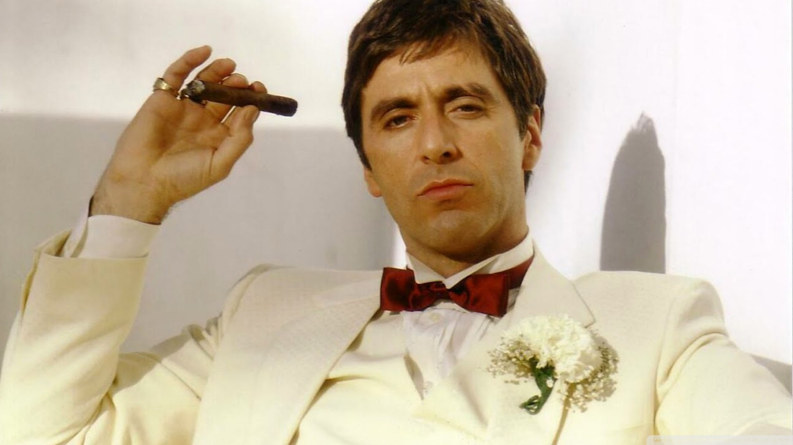
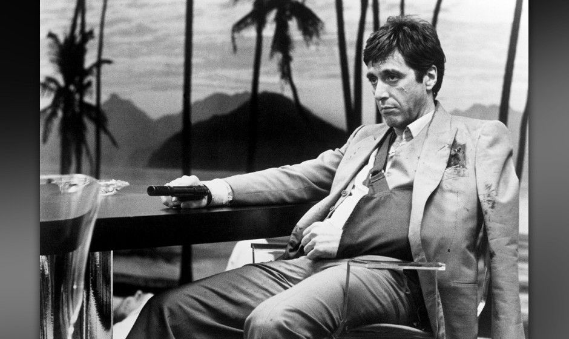
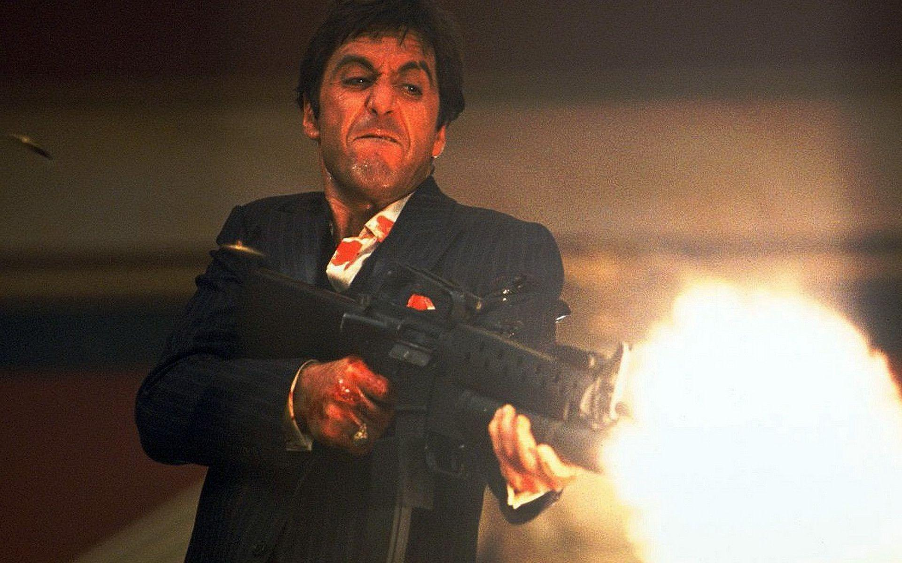
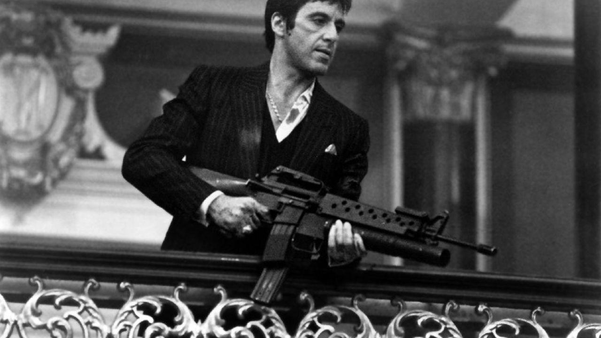
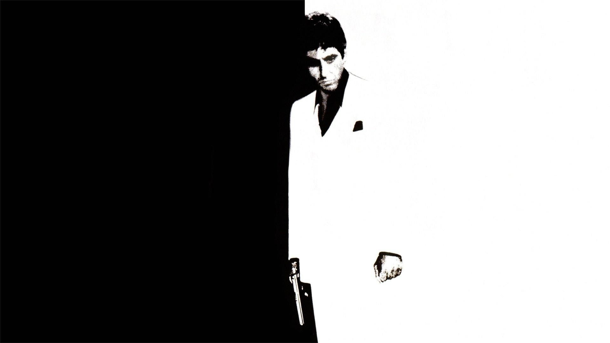
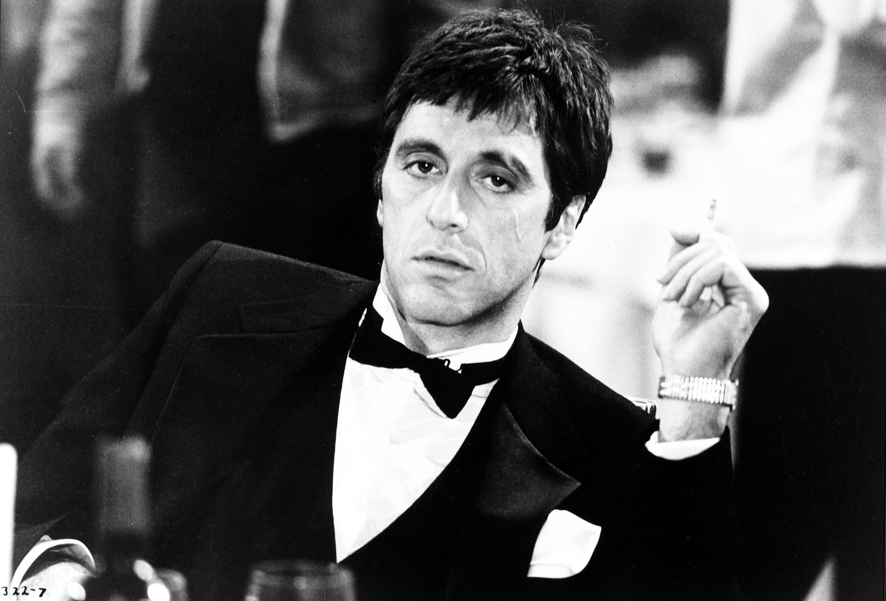
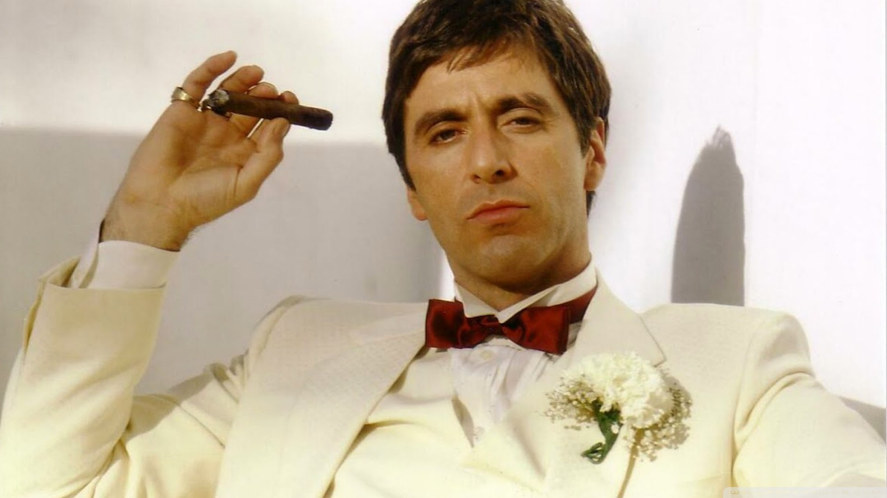
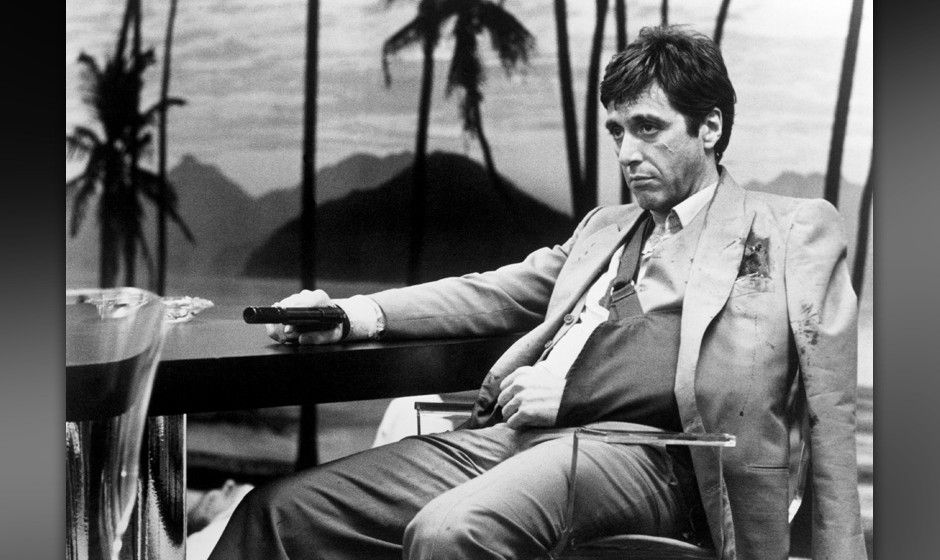
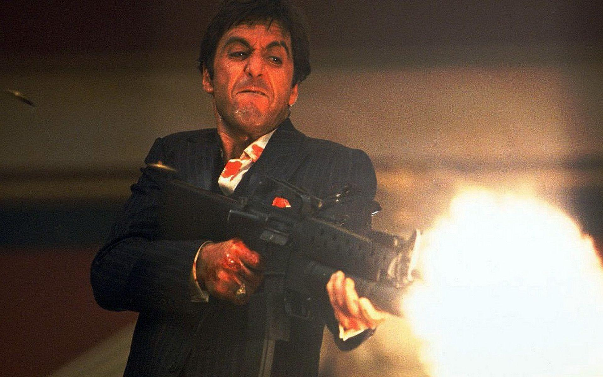
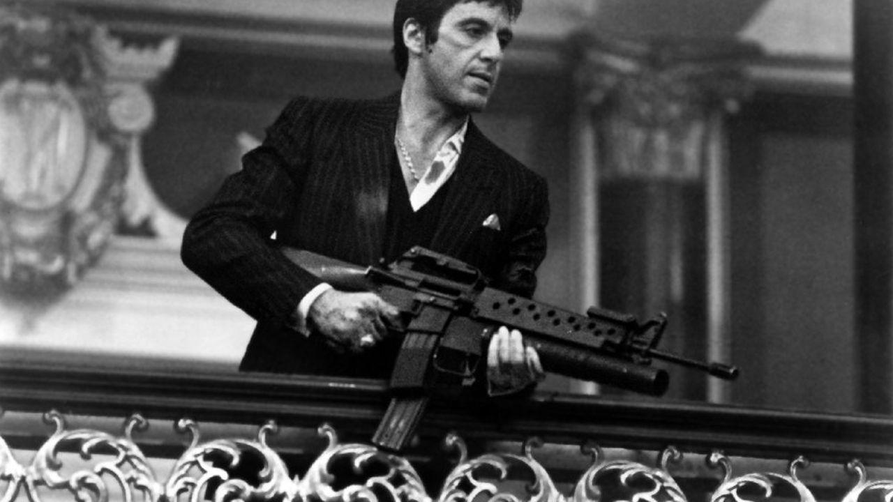
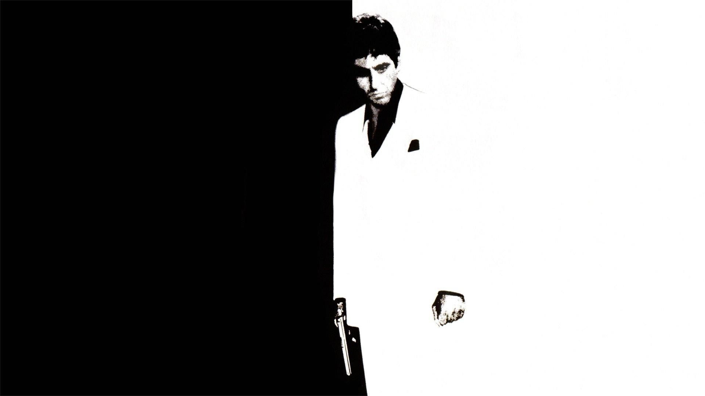
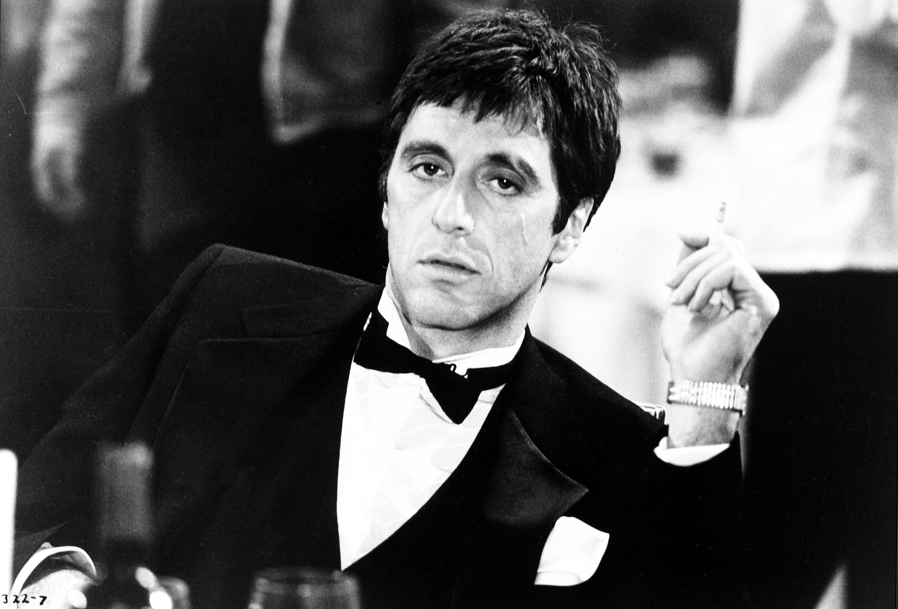